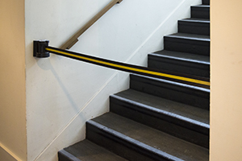
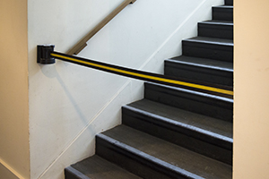
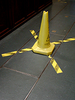
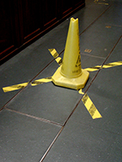

 



Ne pas toucher
Typologies de l'exposition « D'abord, un constat tout à fait trivial : à l’entrée de la plupart des musées du monde sont énoncés tout un ensemble d’instructions concernant le comportement à adopter lors de la visite : interdictions de boire, de manger, de fumer, de courir, de faire trop de bruit… Ces instructions font partie des bonnes manières qui se sont imposées progressivement dans le champ culturel au cours du temps. […] Le monde des arts plastiques s’est progressivement policé et en est venu à adopter tout un ensemble de comportements standards, comportements impliquant une forme de civilité et valable dans tous les musées du monde. Les instructions présentes sur les murs des musées nous renvoient directement à l’idée d’une autorité de l’art qui serait invisible. » Jérôme Glicenstein, L’art : une histoire d’expositions, Paris, PUF, 2009, p.87. Je vous invite à enrichir cette collecte en m'adressant vos images par mail. Vous contriburez ainsi à élargir cette analyse typologique des éléments de l'exposition.